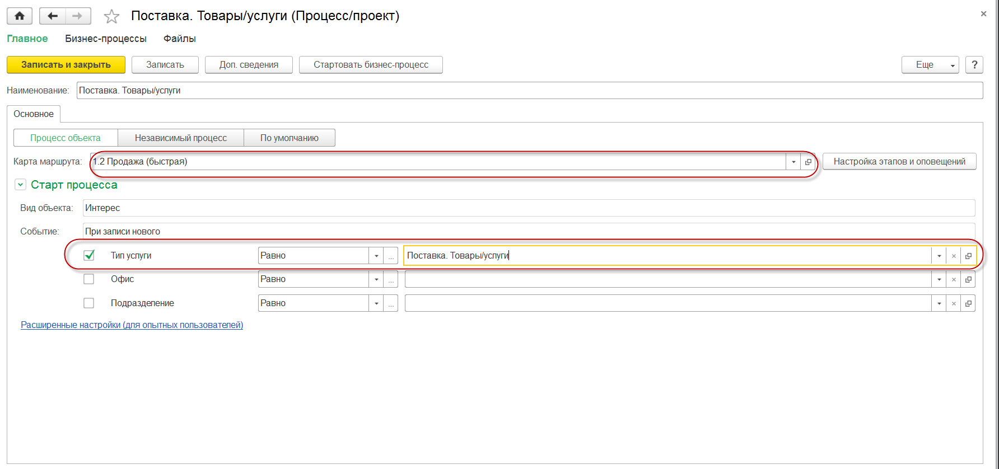

В решениях "1С: CRM" для улучшения процесса продаж используются объекты “Карта маршрута” и “Процессы”. Рассмотрим в качестве примера следующую задачу:
"Наша компания предоставляет своим клиентам следующие типы услуг:
Ремонт и сопровождение техники (не гарантийное). Данную услугу предоставляет "Департамент обслуживания". В департаменте имеется свой "Отдел сопровождения", в котором принимает все работы его руководитель. В случае необходимости выезда на территорию клиента, подключается другое подразделение - "Отдел внедрения".
Продажа новой техники. Данную услугу предоставляет "Отдел продаж". Особенности процесса продаж: после продажи техники ее необходимо развернуть на территории клиента и проверить ее работоспособность. Менеджер отдела продаж отвечает за весь процесс, подключая к нему одно из подразделений "Департамента сопровождения".
Все обращения от клиентов в Компанию поступают в единое "окно".
Важно! Для использования бизнес-процессов необходимо зайти в раздел "Настройки - Настройки системы - Бизнес-процессы" и в открывшейся форме установить галочку "Использовать бизнес-процессы и задачи". Использование механизма бизнес-процессов доступно только в версиях "ПРОФ" и "КОРП" решений 1С: CRM.
Подключим к документу "Интерес" бизнес-процесс. Для этого используем уже имеющуюся карту маршрута "1.2 Продажа (быстрая)" (или создадим собственную из наиболее подходящей из библиотеки карт). Для этого зайдем в раздел "Процессы - Справочники и настройки - Карты маршрутов бизнес-процессов". Схему в выбранном процессе оставляем без изменений и в открывшейся форме перейдем на закладку "Параметры", где укажем:
У карты маршрута имеется важный реквизит "Состояние". Карта маршрута будет использоваться в решении, если у неё установлено состояние в значение "Действует". При остальных состояниях такая карта задействована НЕ будет. Указываем состояние в значение "Запланирован" у созданной карты маршрута, о
ставляем все остальное по умолчанию и закрываем её сохраняя сделанные изменения: выбираем команду "Записать и закрыть". Все остальные настройки будем делать уже в карточке процесса для каждого из подразделений.
У процесса имеется важный реквизит "Состояние". Процесс будет использоваться в решении, если у него установлено состояние в значение "Действует". При остальных состояниях такой процесс задействован НЕ будет. Указываем состояние в значение "Действует" у созданного процесса и закрываем его сохраняя сделанные изменения: выбираем команду "Записать и закрыть".
Важно! При одновременном использовании карт маршрутов и процессов у которых назначено состояние "Действует" приоритетным является процесс: именно он будет стартован при выполнении заданный условий.
Дальнейшая работа менеджера с документом "Интерес" описана в разделе Ведение взаимодействий с клиентами, их планирование>>>
Для информации! Сложность процессов продаж может быть значительно больше. Важно отметить, что менеджеры, которые работают с этими процессами - выполняют свои действия также в документе Интерес в привычном и удобном виде работы. Все остальное остается прозрачно для менеджеров